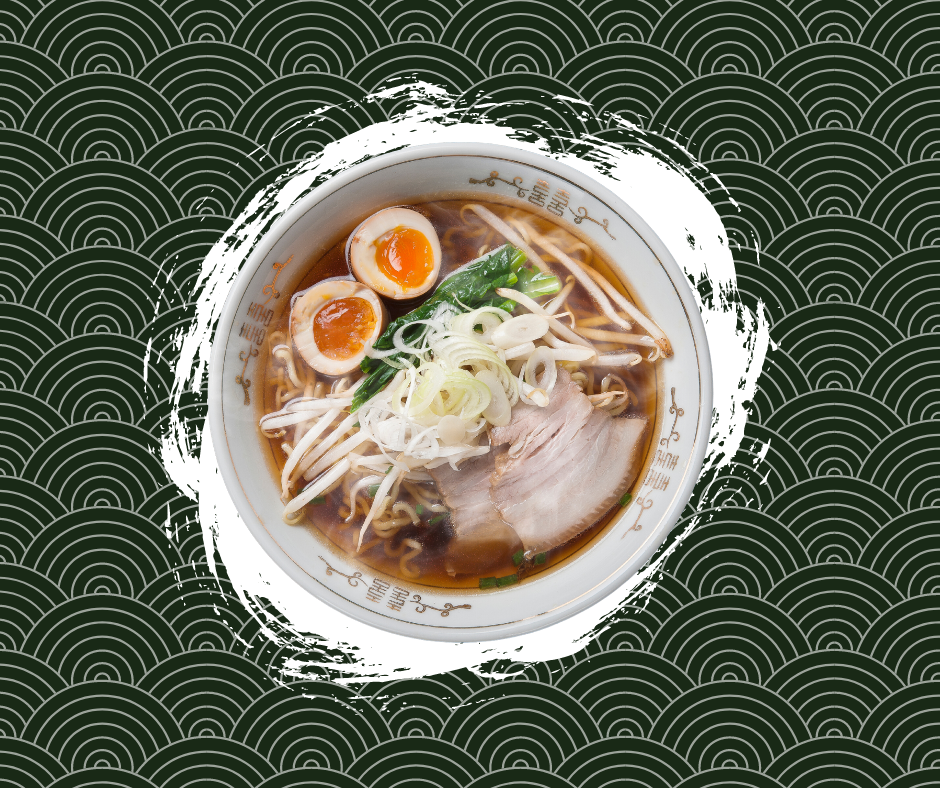

Voila! Featuring my favorite dishes from the different corners of the world! Let's get our stomach rolling, and let's dive into the ocean of mouthwatering gastronomical pleasure-packed eating expedition. Itadakimasu!

Ramen
A Japanese noodle soup , often flavored with soy sauce or miso, and uses toppings such as sliced pork, nori, menma, and scallions